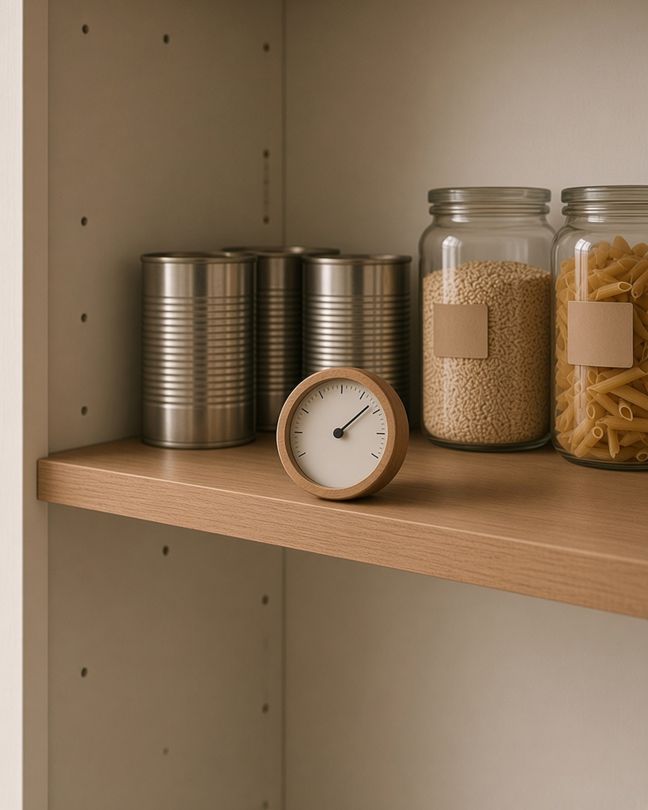
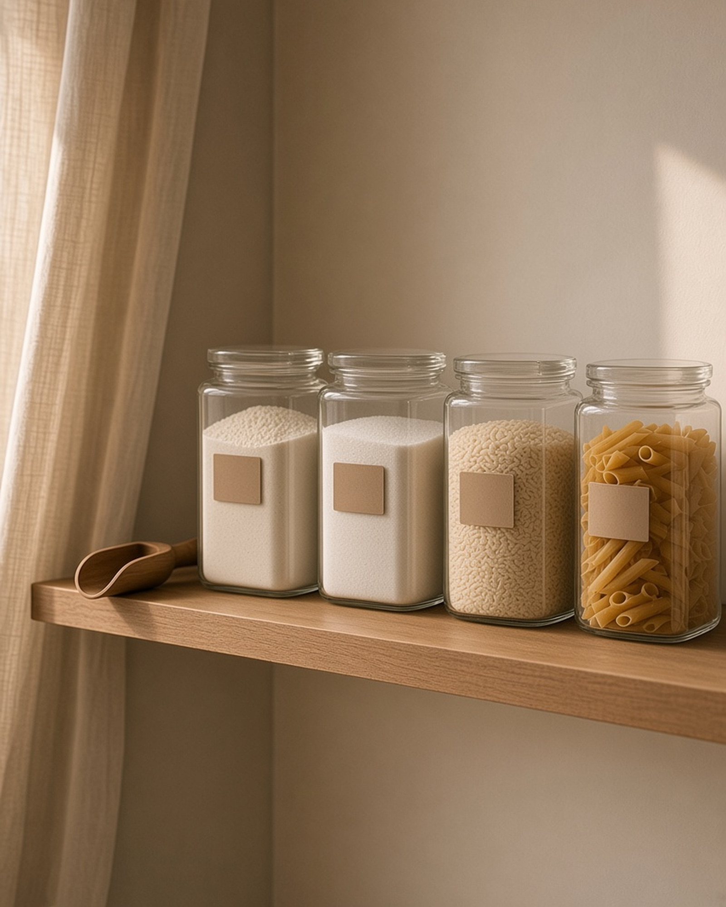
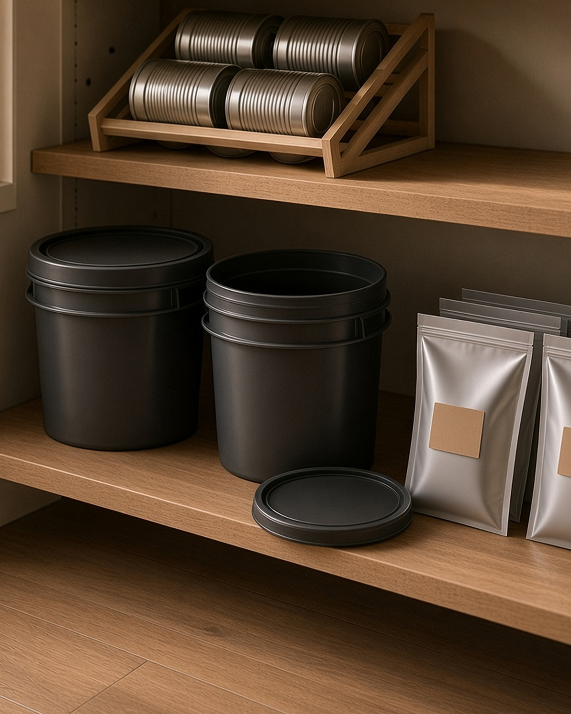
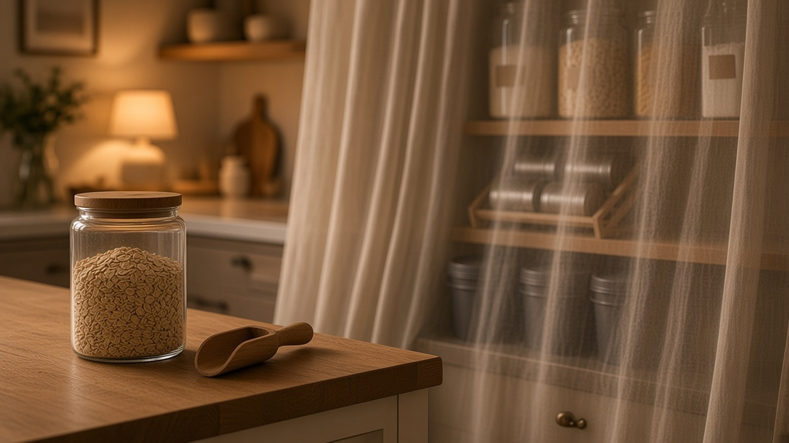

Most pantries are built by accident. A bag of rice opened in March, three cans of chickpeas bought on three different days, a jar of oats pushed to the back by a newer jar of oats. Nothing wrong with any of it. It just doesn't keep track of itself.
A quiet pantry is the same shelf with a little order behind it. Food you already eat, kept where it lasts, used oldest first, and refilled before anyone has to think about it. It is not a project and it is not a hobby. It is a few cool shelves, a calendar note and a habit, behind a curtain, out of the way. This guide covers where to keep it, how long things keep, how to store dry food for years, and how to rotate it without ever doing a big clear-out.
Some links on this page are Amazon affiliate links. We may earn a commission at no extra cost to you.
As an Amazon Associate I earn from qualifying purchases.
The pantry at a glance
These are the jobs a calm pantry does, not a kit to buy at once. Start at the top; the long shelf at the bottom is optional.
| The job | What helps | Section |
|---|---|---|
| Know the room is cool and dry | A thermometer-hygrometer | Where it lives |
| Eat the oldest can first | A first-in, first-out can rack | Cans |
| Know what's in a container and when it went in | Removable date labels | Cans |
| Keep everyday flour and sugar closed up | Canisters with a tight lid | The working shelf |
| Keep dry staples for years | Mylar bags with oxygen absorbers, in a bucket with a reusable lid | The long shelf |
How much, and why a little at a time
Did you know that both Ottawa and Québec City put the starting line in the same place? Health Canada asks households to be ready to look after themselves for at least 72 hours, and the Gouvernement du Québec's home emergency kit calls for non-perishable food for at least the first three days. That is the floor, not the ceiling, and it is smaller than most people imagine: a few days of meals you would actually cook.
Utah State University Extension's food storage guide gives a gentle way to grow past it: buy foods you enjoy and are likely to eat, and slowly buy a little extra each week until you reach the amount you want. No single big shop, no stack of unfamiliar food. Health Canada adds a practical note: keep food allergies, celiac disease and food intolerances in mind when you choose what to keep.
Where it lives: cool, dry, dark, off the floor

Where food sits matters as much as what it sits in. The USDA's Food Safety and Inspection Service is specific: store canned foods and other shelf-stable products in a cool, dry place, and never above or beside the stove, under the sink, in a damp garage or basement, or anywhere exposed to high or low temperature extremes. Temperatures below 85 °F (about 29 °C) are best. Above 100 °F (about 38 °C), FSIS calls heat harmful to canned goods, and notes that the risk of spoilage jumps sharply as storage temperatures rise.
Cooler is better still. Utah State's guide puts the optimal range at roughly 40 to 70 °F (about 4 to 21 °C), and cites Brigham Young University research in which stored wheat kept acceptable quality for 25 years in a cool basement and only 5 years in a hot garage or attic. The same guide names moisture as the other critical factor: dry foods that pick up moisture from the room can grow mold, yeast and bacteria, and damp air rusts cans and breaks down paper packaging. In a humid room, it notes, a dehumidifier may be needed.
Two more details from the same page are easy to miss. Direct sunlight speeds the breakdown of both food and packaging. And food should sit off the floor, because flooring, especially raw concrete, can leach chemicals that pass through plastics and rust metal. A shelf a few inches up is enough.
For a Canadian home there is one more line worth reading twice: canned foods should not be allowed to freeze. Utah State explains that freezing can bulge cans and cause seam failures. An unheated garage in January is the wrong room.
Humidity is hard to judge by feel. A small digital thermometer-hygrometer on the shelf turns "cool and dry" from a guess into a reading. Look for one that shows both temperature and humidity and keeps a high and low record, so you can see what the room did overnight. Put it on the pantry shelf for a week, in summer and again in winter, and you will know whether the room works.
Cans, and the oldest-first rule
Commercially canned food is the backbone of most pantries, and the USDA gives clear timelines. High-acid canned foods such as tomatoes, fruit, juices and pickles keep their best quality for 12 to 18 months. Low-acid canned foods such as meat, poultry, fish, soups and most vegetables keep 2 to 5 years, as long as the can stays in good condition in a cool, clean, dry place. Some canned foods, such as certain canned hams and seafood, are not shelf stable at all; those are labelled "Keep Refrigerated."
Did you know the date on a can is about quality, not safety? FSIS explains that, except for infant formula, the dates manufacturers print tell you when food will be at its best, not when it becomes unsafe. A "Best if Used By" date is not a safety date. The flip side matters too: the can itself does the work. FSIS says to discard cans that are leaking, bulging, deeply dented or heavily rusted. A deep dent is one you can lay your finger into, and any sharp dent on a seam is a reason to let it go. Light surface rust that wipes off with a finger or a paper towel is not serious.
Rotation is what keeps those timelines on your side. Utah State calls it FIFO, first in, first out: use the oldest food first. FSIS suggests checking the pantry every few weeks and using cans you have had on hand for a while. One way to do that without thinking is a shelf that does the sorting for you. A gravity can rack is loaded from the top and dispenses from the bottom, so the can you reach for is always the one that has waited longest. The FIFO Can Tracker is one: the listing gives a capacity of up to 54 cans, a size of 16 by 16 by 12 inches, and says units connect together to grow.
The other half of rotation is a date you can read. Utah State recommends writing the purchase month and year on each can lid with a marker, and labelling home-packaged dry food with the product name and date. For canisters and bags that get reused, a removable label is tidier than marker on plastic. Yoget removable food labels come as two rolls of 150, each 1 by 3 inches, with lines for date and contents; the listing says they peel off without residue.

FIFO Can Tracker, 54 cans
A gravity rack for up to 54 cans: load at the top, take the oldest from the bottom.
View on Amazon
Yoget removable food labels, 300
Two rolls of 1 × 3 inch write-on labels with Date and Contents lines.
View on AmazonThe working shelf

Not everything in a pantry is meant to wait for years. The working shelf holds what you cook with every week: flour, sugar, rice, pasta, oats. FSIS gives rice and dried pasta a shelf life of about 2 years. The aim here is simpler than long storage: keep moisture and insects out, and make the oldest bag the obvious one to open.
Utah State's guidance on dried foods is to keep them in clean, dry, insect-proof containers with tightly fitted lids, because heavy plastic bags are acceptable but are not insect- or rodent-proof. Health Canada's version is shorter: store food in watertight containers. A clear canister also shows you, at a glance, when it's time to open the next bag.
The OXO Good Grips 2-piece POP container set is built for exactly this shelf. According to the listing, the two 4.4-quart containers fit standard 5-pound bags of flour or sugar, close with a push-button seal the maker describes as airtight, come printed with clear ingredient lettering, and keep a half-cup scoop clipped under each lid. They stack with other POP pieces, which keeps a shelf looking like one system instead of a collection.

OXO Good Grips 2-piece POP container set
Two 4.4 qt push-button containers sized for 5 lb bags of flour or sugar.
View on AmazonThe long shelf: buckets, Mylar and oxygen absorbers

For dry staples you want to keep for years, Utah State's food storage guide is unusually direct about the best container: a foil-type pouch, sealed with oxygen absorbers, placed inside a 5-gallon bucket or similar container that acts as a barrier to rodents. Each layer does one job.
The bag. Foil laminate pouches, often called by the trade name Mylar, sharply reduce how much oxygen and moisture pass through. They are not rodent-proof on their own; the guide notes that rodents can easily chew into them, which is why the bucket matters. It recommends closing the bags with a heat-sealing unit after adding the absorbers, and not with a clothes iron, which gives a poor seal. For scale, a 1-gallon bag holds about 6.8 pounds (3.1 kg) of white rice, 7 pounds (3.2 kg) of wheat, or 5 pounds (2.3 kg) of dry milk.
The oxygen absorber. Did you know an oxygen absorber is mostly iron powder? In a sealed bag, the iron rusts, and in doing so it binds the oxygen. Utah State Extension says the goal is to bring the oxygen down to 0.01 percent or less, and gives sizes as a rule of thumb: 50cc for a US quart (about 0.95 L) container, 300cc for a US gallon container or a #10 can, and three 500cc packets for a 5-gallon container. Once a package of absorbers is opened, use them within 15 minutes, and keep any spares in an airtight glass jar. Some foods gain nothing from absorbers at all; the same fact sheet lists wheat, beans, corn and peas as not oxygen-sensitive.
The one rule that is not optional. Foods stored with oxygen absorbers must be dry, about 10 percent moisture or less. Utah State is explicit: storing moist foods in reduced-oxygen packaging can lead to botulism. The National Center for Home Food Preservation lists the conditions in which Clostridium botulinum grows: a moist, low-acid food, a temperature between 40 and 120 °F, and less than 2 percent oxygen. It also notes that some foods seem dry but still hold enough moisture to cause problems, especially home-dried foods, so this layer is for thoroughly dried foods only. Utah State says vacuum sealing follows the same rule: it is for dry foods only, and is not a preservation method by itself. Dehydrated and freeze-dried foods, rice, and other dry staples belong in this layer. Anything moist does not.
The Wallaby 1-gallon Mylar bags with oxygen absorbers come as a matched set: the listing includes 30 heat-sealable 1-gallon bags, 30 oxygen absorbers of 400cc each, packed in sets of ten, and 30 labels. That is more absorber than the 300cc per gallon in Utah State's rule of thumb. One note from the listing worth knowing in advance: the bags may not shrink like a vacuum bag, because the absorbers remove only the oxygen, about a fifth of the air.
The bucket. Utah State describes food-grade buckets as high-density polyethylene (HDPE), with a slow oxygen transfer that lets oxygen in over several years; its rule of thumb is that they store food for up to 5 years on their own. Lids should have a sealing gasket. Use only containers made for food: the guide's advice is that when in doubt, assume it is not food grade, and never reuse a bucket that held something other than food.
The United Solutions 5-gallon buckets come six to a pack with snap-on lids and metal handles, and the listing describes them as food-grade and BPA-free. That is the seller's claim, typically referring to US food-contact rules, not a verified Canadian certification. In black, they look like plain household storage on a low shelf.
The lid you open. A snap-on lid is fine for a bucket you won't touch for years, but Utah State notes that some lids can only be used once and may deform after opening. For the bucket you dip into, it points to a reusable screw-top design called the gamma seal, and to a bucket wrench for opening it. The Gamma2 Gamma Seal lid is that lid: the listing says it fits standard 3.5, 5, 6 and 7-gallon buckets and is made from food-grade, BPA-free HDPE. As with the buckets, that is the listing's claim, typically referring to US food-contact rules, not a verified Canadian certification. Check the rim of your own bucket against the listing before you buy; bucket rims vary.

Wallaby 1-gallon Mylar bags with oxygen absorbers, 30-pack
30 heat-sealable 1-gallon bags, 30 oxygen absorbers (400cc each) and 30 labels.
View on Amazon
United Solutions 5-gallon buckets with lids, 6-pack, black
Six black 5-gallon buckets with snap-on lids, listed as food-grade and BPA-free.
View on Amazon
Gamma2 Gamma Seal lid, red
A two-part screw-on lid listed to fit standard 3.5 to 7 gallon buckets.
View on AmazonOut of sight, still in reach
A pantry can be calm to look at. Plain containers, the same canisters in a row, buckets in one colour on a low shelf, and a linen curtain or a closet door in front of the deep storage. The point is not to hide food from anyone. It is that a house feels quieter when its supplies are put away in one place, the way linens live in a closet and not on the sofa.
The Gouvernement du Québec makes the practical version of the same point: keep your emergency supplies in a practical, easy-to-reach place, ideally gathered in one spot, and stored properly, for example in bins or on shelves. If you have children, tell them where it is. Health Canada adds one detail for flood-prone areas: store food on high shelves, away from water that could be contaminated. And keep a manual can opener with the cans. It is on both governments' lists.
Once a year, and a little every week
| How often | What to do | Source |
|---|---|---|
| Every week | Cook from the pantry, oldest first, and add a little back | USU Extension |
| Every few weeks | Look over the shelves; use the cans you've had longest | USDA FSIS |
| Every 6 to 12 months | Rotate stored food and water through the kitchen | USU Extension |
| Once a year | Check the kit still fits your household; replace expired food and the water | Gouvernement du Québec, Health Canada |
| Twice a year, summer and winter | Read the thermometer-hygrometer's highs and lows | Lock & Linen habit, based on the FSIS and USU ranges above |
Pick a date that already means something, the first snowfall or the day the clocks change, and let the yearly check ride along with it.
The shelf at the end of the day

Evening, and the kitchen is winding down. The curtain is drawn across the shelves, the oldest can is already at the front for tomorrow, and nothing needs counting. A hidden home keeps its food the way it keeps everything else: in order, out of the way, and ready without fuss.
Sources
- USDA Food Safety and Inspection Service, Shelf-Stable Food Safety (updated Oct 24, 2024): https://www.fsis.usda.gov/food-safety/safe-food-handling-and-preparation/food-safety-basics/shelf-stable-food
- USDA Food Safety and Inspection Service, Food Product Dating (updated Apr 23, 2025): https://www.fsis.usda.gov/food-safety/safe-food-handling-and-preparation/food-safety-basics/food-product-dating
- Utah State University Extension, Food Storage Booklet (2013): https://extension.usu.edu/preserve-the-harvest/files/Food-Storage-Booklet.pdf
- Utah State University Extension, Oxygen Absorbers fact sheet: https://digitalcommons.usu.edu/cgi/viewcontent.cgi?article=1196&context=extension_curall
- Utah State University Extension, Packaging Foods: https://extension.usu.edu/preserve-the-harvest/food-storage-packaging
- National Center for Home Food Preservation, Ensuring Safe Canned Foods: https://nchfp.uga.edu/how/general-canning-information/ensuring-safe-canned-foods/
- National Center for Home Food Preservation, “Dry Canning” Isn't Canning (Apr 16, 2020): https://nchfp.uga.edu/blog/dry-canning-isnt-canning-to-me
- Health Canada, Food and drinking water safety in an emergency: https://www.canada.ca/en/health-canada/services/food-drinking-water-safe-emergency.html
- Gouvernement du Québec, Faire son plan familial d’urgence et sa trousse d’urgence (in French): https://www.quebec.ca/securite-situations-urgence/urgences-sinistres-risques-naturels/comment-se-preparer-a-la-maison
- Product details: each linked Amazon.com listing, loaded Nov 13, 2026.